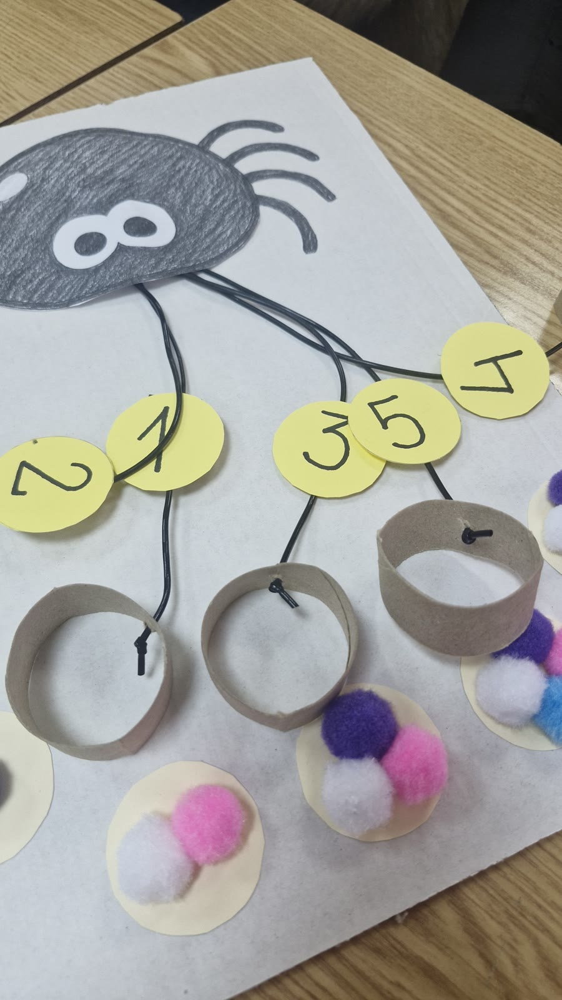
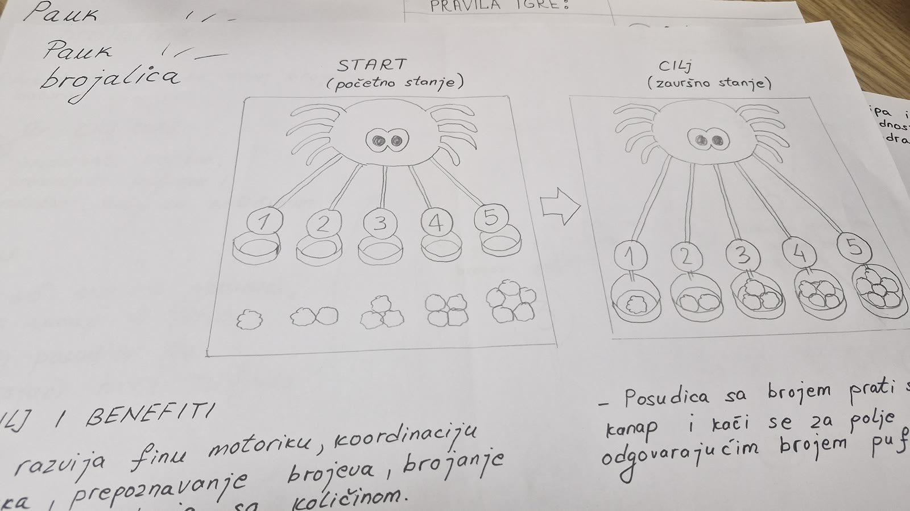

Radovi i primeri / Čas 8 / Prototip igračke
Pauk brojalica
Ognjen Mijaljević25/24
Dosije: Prototip igračke
Čas 8
3 prikaza rada · Gradivo časa





Ista ruka, ostale nedelje
- Modularni jastuk — prostirka Reciklaža tekstilanedelja 9 · 1 slika